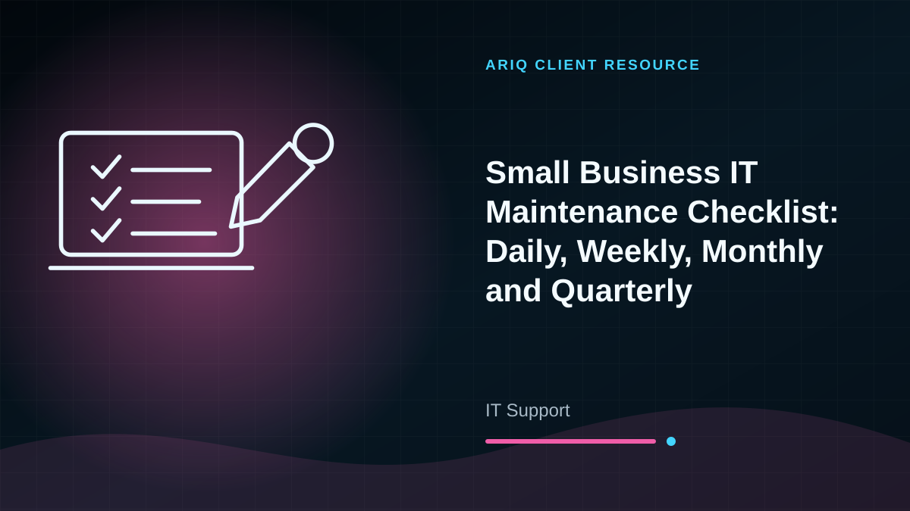
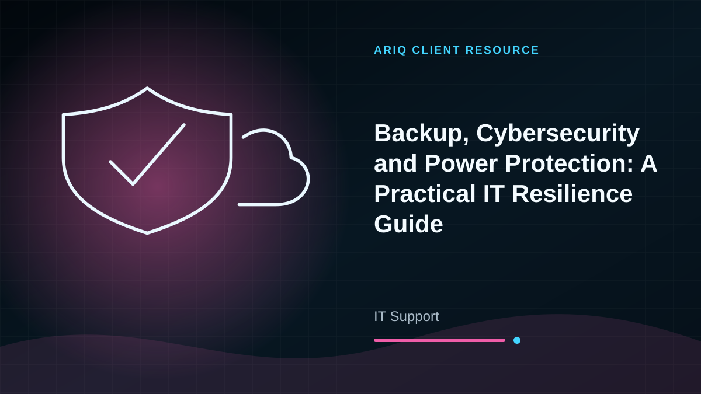

Computer Support
Performance issues, software installation, updates, user accounts, backups, and general troubleshooting.
Reliable Technical Help
Remote and on-site support for computers, networks, software, printers, business systems, and everyday technology problems.
What We Provide
From consultation to delivery and after-sales support, AriQ keeps the process clear and practical.
Performance issues, software installation, updates, user accounts, backups, and general troubleshooting.
WiFi problems, routers, access points, cabling, internet sharing, device connectivity, and network expansion.
POS support, database connectivity, user setup, cloud services, email, printers, and workflow troubleshooting.
Health checks, updates, backups, security recommendations, documentation, and planned maintenance visits.
Our Process
Send the error, device type, screenshots, and a short explanation of what happened.
We choose the fastest safe support method and identify the cause of the problem.
We fix the issue, test the system, and recommend steps to reduce repeat problems.
Client Resources
Compare options, understand the trade-offs and prepare the right questions before requesting a quotation.

IT Support
Prevent avoidable downtime with a simple schedule for backups, updates, antivirus, user accounts, networks, power and business systems.
Read detailed guide →
IT Support
Protect business data and systems from theft, malware, failed drives, power cuts and human error using a simple layered plan.
Read detailed guide →Talk To AriQ
Send us your requirements and location. We will recommend the most suitable solution and provide a clear quotation.